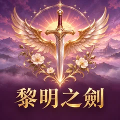

遊戲內公告
團本開荒與專業備註
首批團隊副本將於 開放。有打團計畫的夥伴，請在開放前至少練好一隻 60 級角色。
歡迎加入黎明之劍！請在自己的公會備註填寫專業技能，方便大家互相幫忙。

黎明之劍魔獸世界：永恆遊戲內公告
首批團隊副本將於 開放。有打團計畫的夥伴，請在開放前至少練好一隻 60 級角色。
歡迎加入黎明之劍！請在自己的公會備註填寫專業技能，方便大家互相幫忙。
Discord 公告
開設公會倉庫的目標是 100 金。有餘裕的夥伴歡迎到遊戲內公會銀行自由捐助，金、銀、銅幣都可以。
Discord 公告
有空歡迎到巴哈招募文，使用「回覆」功能分享組隊或入會心得，讓更多玩家看到招募資訊。幾天有一位夥伴回覆就好。
目前全公會成員都有收人權限。在遊戲聊天欄輸入 /ginvite 角色名稱 就能發出入會邀請，例如 /ginvite 真田 信村。
想一鍵發話，可以在遊戲內開啟巨集介面，建立新巨集、貼上下面整行，再把巨集拖到快捷列。點一下就能發送招募訊息。
/2 《黎明之劍》誠徵戰友！老手來當大腿，新手來當潛力股。別怕不會打，只要有心肯學，公會手把手把你養大！12月團本開荒，私訊我加入範例用 /2 發到綜合頻道。若沒看到訊息，先確認聊天視窗的頻道編號。綜合頻道顯示為 1 就改用 /1，要發到尋求組隊且頻道顯示為 6 就改用 /6。
從幾個人相約組隊開始，慢慢認識彼此。想跑任務、約副本或聊配裝，上線喊一聲「有人要一起嗎？」就好。
公會概況載入中…
遊戲內私訊或加 BattleTag，選一位聯絡就好。
遊戲內私訊
遊戲內私訊
遊戲內私訊 · 較常上線
不知道怎麼開場？這樣說就好
也可以在組頻喊一下，有看到就會加。